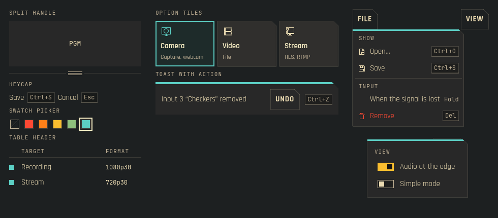
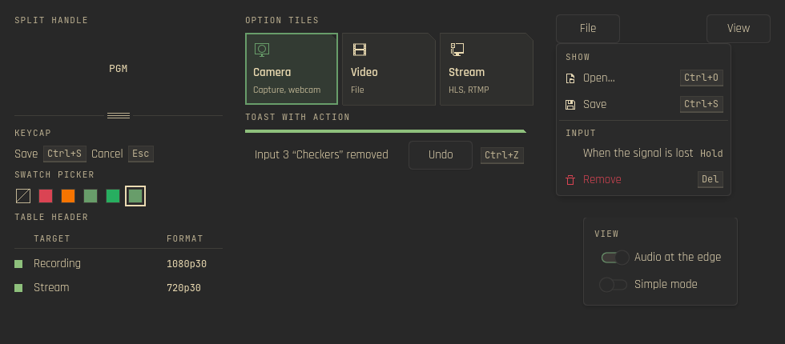

Kante 1.43
What lmix (a broadcast and show app on Kante) was missing after the QA of its Mix page on 25.10.2026: the monitors could not be resized, the File menu listed 18 flat entries, the input menu 8 sub menus, "Add input" hid 13 source kinds in a combo box, and removing an input asked nothing and could not be undone. Added to Kante first. QML only. Screenshots from qml under Xvfb (Qt 6.12, Kirigami, Breeze icons); Kante Light shows the platform's colours. Menu and popover were open at the same time only for the shot.
All parts
KanteSplitHandle under a monitor (drag, arrows, double click to the default), KanteKeycap, KanteSwatchPicker with a struck-through "none", KanteTableHeader with rows that take their columns from it, KanteOptionTile (Camera chosen), KanteToast with an Undo action and its key, a File menu of KanteMenuItems under KanteMenuSections (icons, keycaps, a value, a destructive item) and a KantePopover with two switches.

